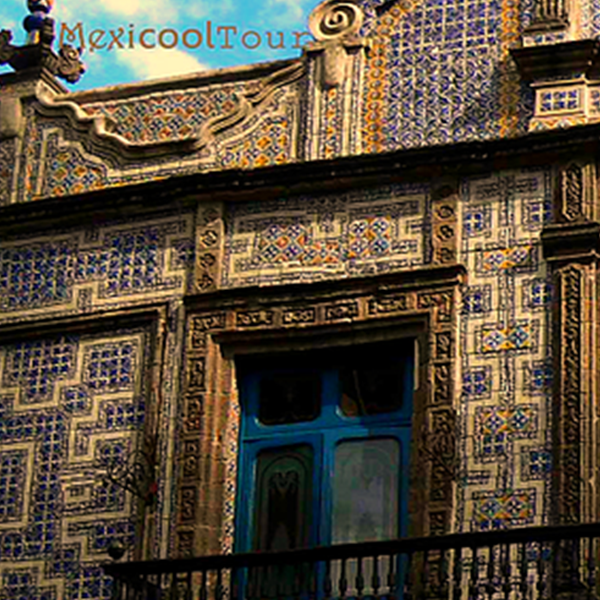
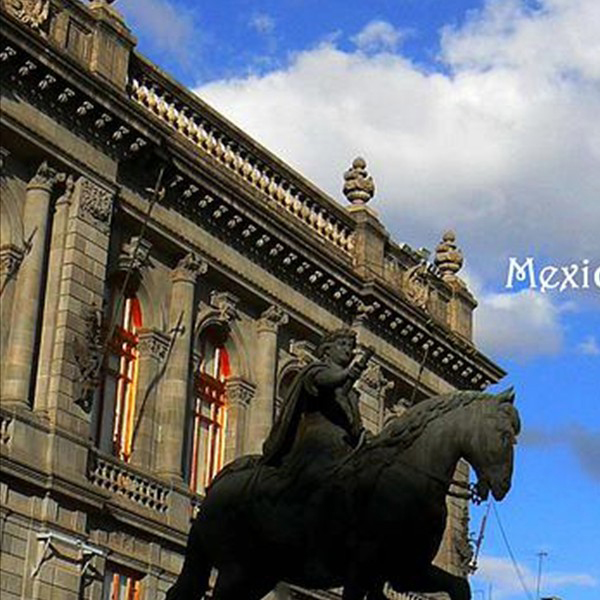
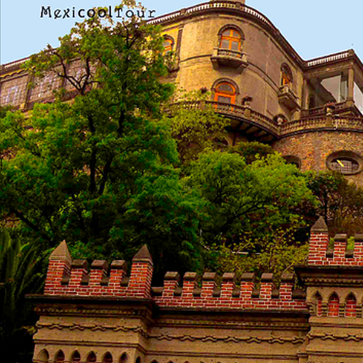
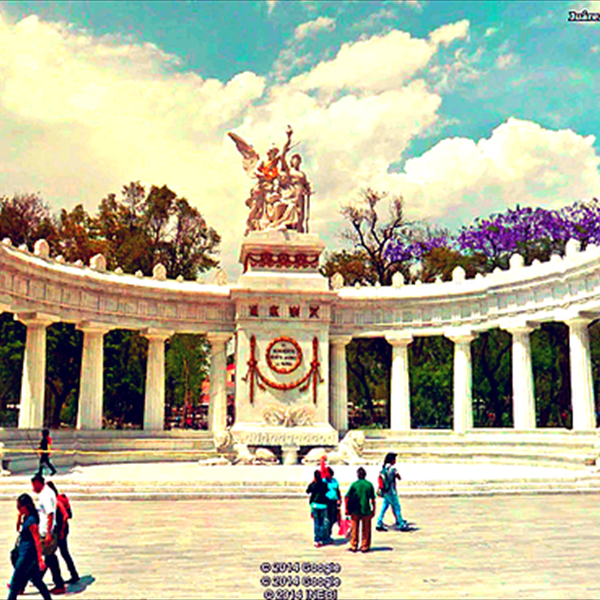

Viceroyal Palaces

Let yourself be wrapped by the magic of this city. Together We unveil the secrets, myths and legends that keep the walls of these elegant palaces. Most of them truly jewels of viceroyal architecture.
Through of this stroll We discover the history of illustrious families being witneses of their rich legacy. Some of this gems are:
Meeting Point
Schedule:
Monday, Wednesday, Friday 9:00 A.M.
Mexican Markets
Seduce your feelings with the great diversity of forms, aromas, colors and flavors inside the most typical markets. Enrich your spirit and visit the soul of Mexican culture. Have fun! Join us for this cultural trip in which color reigns in every corner, and where the flavor fuses the Pre-Colombian with the Contemporaneous.
Venture to take a pleasant trip, rich in history and flavor. We have a tour waiting for you (choose two or more):
Meeting Point
Schedule:
Monday, Wednesday, Friday 2:00 P.M.
Historic Center

Mexico city better known as the city of palaces and ancient capital of the Aztec empire. It is a vibrant megalopolis, home of more than 22 millions inhabitants, it was founded by the Aztecs in 1325 and considered the oldest capital city of the continent.
In this journey we will visit the Historic Center (district) of Mexico City, declared by the UNESCO as a World Heritage Site of Mankind, We will take you through Mexico City's main streets, where we will to get to see precolombian, colonial & modern buildings such as:
Meeting Point
Schedule:
Tuesday, Thursday & Saturday 9:00 A.M.
Chapultepec Park
Delight yourself with the Woods of Chapultepec, the biggest in the city and place of refuge and rest from Aztec governors and noble European families. Our trip includes the visit to the Altar de la Patria, a monument erected to honor the memory of the cadets who gave their lives defense of Mexico.

Through the halls of the Chapultepec Castle we will feel the historic essence of such a unique construction whose functions ranged from a military school to an imperial precinct for the house of the Habsburgs.
In a nice little train we will take a trip around the east urban oasis. A stop at the Chapultepec Zoo will show us the great variety of flora and fauna that is sheltered in this corner, considered the most ancient in Mexico. Finally, we will travel in time visiting the Aztec hall of the National Museum of Anthropology.
Meeting Point
Schedule:
Tuesday, Thursday & Saturday 2:00 P.M.
Meeting Point
Here start the Tour
HEMICYCLE TO JUÁREZ
in the park Central Alameda

Note
Purchasing TWO tours get the third one with 50% off
Every sunday, Paseo de la Reforma Ave. and Juarez Ave. are closed for pedestrian and cyclists. Take your time, you can walk or take the subway to get on time.
THIS PROGRAM INCLUDES:
- Bilingual guide - certified by the Ministry of Tourism of Mexico (SECTUR)
- Free maps
- All admissions to archaelogical sites are included
DO NOT INCLUDE:
- Tips to guides and drivers
- Services not mentioned above
- Food and drinks
Discover other tours
Memories of my Mexico
More
Xochimilco & Coyoacan
More
Teotihuacan & Basilica
More
Guadalupe's Virgin 
More
Wine & Bernal's Peak
More


{kind=link}
{kind=link}
{kind=link}
{kind=link}
{kind=link}
{kind=link}
{kind=link}
{kind=link}